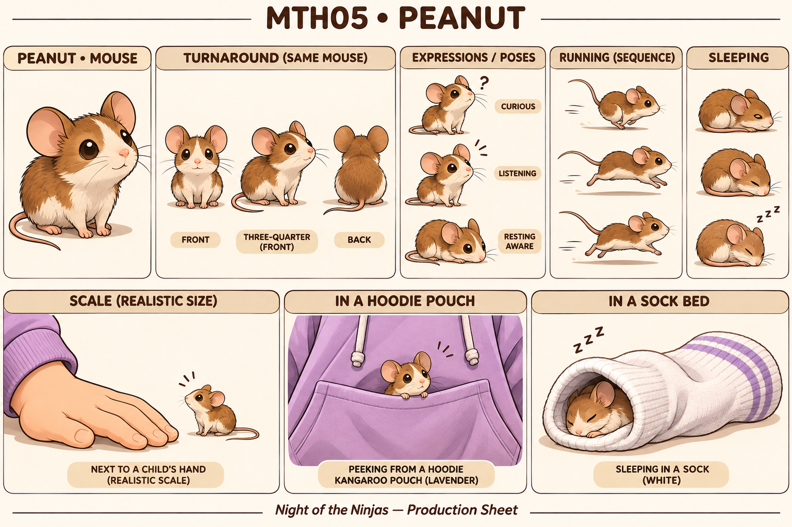
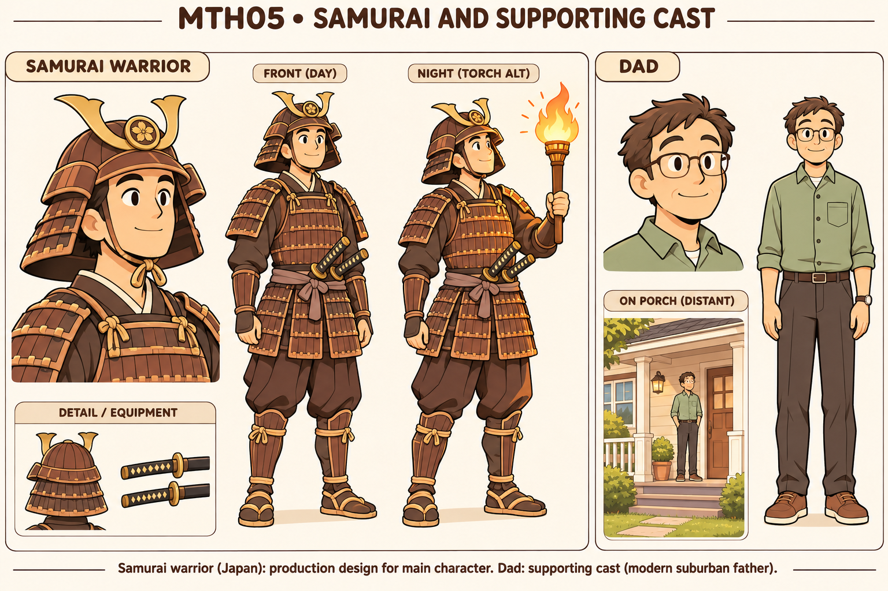

Jack & Annie · 4권 공통 시각 기준

얼굴·비율·선화 참조용입니다. 4권의 우비·장화·해변 의상을 5권에 자동 적용하지 않습니다.
4권의 캐릭터 페이지와 실제 시각 시트를 참조합니다. 아래에는 후반부 내용이 포함됩니다.
얼굴·비율·선화 참조용입니다. 4권의 우비·장화·해변 의상을 5권에 자동 적용하지 않습니다.
4권의 실제 시각 시트를 공통 얼굴·체형·그림체 기준으로 사용합니다. 5권에서는 원문에 따라 후드 스웨트셔츠와 운동화를 착용하며, 애니의 앞주머니에 Peanut이 머뭅니다. 후드는 7장에 올리고 8장에 내립니다. 잭은 8장 물에 넘어진 뒤 젖은 상태를 유지합니다.
갈색·흰색 털과 큰 짙은 눈을 가진 작은 생쥐입니다. 애니의 주머니, 강을 건너는 나뭇가지, 마지막 장의 양말 침대를 구분합니다.
검은 바지·상의·머리 스카프, 등에 묶은 칼. 두 사람의 키를 구분합니다. 짧은 닌자는 여성으로 6장에 밝혀집니다. 등반용 쇠갈고리는 사용 장면에서만 표시합니다.
동굴 안 돗자리에 앉아 등장합니다. 칼은 떠나기 직전에 착용하며 9장 나무집에서 재등장합니다. 구체적인 나이·얼굴·색채는 새 시트 제작 시 별도 제작 선택으로 기록합니다.
원문의 대나무 갑옷과 두 자루의 칼, 횃불을 기준으로 삼습니다. 닌자와 혼동하지 않습니다.
Dad는 10장 집 현관에 멀리 보입니다. Henry는 짖는 소리만 나오므로 현장 모습을 임의로 추가하지 않습니다. Morgan은 언급되지만 직접 등장하지 않습니다.

얼굴·머리·비율은 4권 시트를 유지합니다. 빨강·보라 후드 색은 시리즈 제작 선택이며, 후드·앞주머니·젖은 옷 상태는 5권 원문을 따릅니다.

갈색·흰색 털과 큰 짙은 눈은 원문 기준입니다. 무늬 배치·세부 체형은 제작 선택이며 아동의 손보다 작은 생쥐로 유지합니다. 개별 시트의 무늬를 본문 장면의 기준으로 사용합니다.

검은 복장·스카프·등의 칼, 키 차이와 짧은 닌자가 여성이라는 점은 원문 기준입니다. 닌자 마스터의 구체적 얼굴·나이 표현과 의상 세부는 제작 선택입니다. 칼을 착용하기 전후와 쇠갈고리 사용 상태를 구분합니다.

대나무 갑옷과 두 자루의 칼, 횃불은 원문에 근거합니다. 갑옷 세부·색상과 아버지의 얼굴·옷은 제작 선택입니다. 아버지는 10장 현대의 집 현관에 멀리 등장합니다.